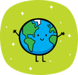

지구과학 탐구활동 (지질)
| 구조 | 형성 환경 | 생성 원리 | 상하 판별 기준 | 알 수 있는 것 |
|---|---|---|---|---|
| 사층리 | 사막의 사구, 하천, 삼각주, 얕은 바다 | 한 방향으로 흐르는 바람·물이 운반한 퇴적물이 경사면을 따라 비스듬히 쌓임 | 층리가 아래로 볼록하면 정상, 위로 볼록하면 역전 | 과거 바람·물이 흐른 방향과 그 변화 |
| 점이층리 | 깊은 바다(대륙대, 해저 선상지), 깊은 호수 | 저탁류처럼 크기가 다양한 입자가 한꺼번에 가라앉을 때 큰 입자가 먼저 가라앉음. 저탁류는 퇴적물이 많이 쌓여 불안정해지거나 지진·폭풍·홍수 등으로 해저 사태가 일어날 때 생김 | 아래로 갈수록 입자가 굵고, 위로 갈수록 가늘어짐 | 저탁류(해저 사태)가 일어난 횟수 |
| 연흔 | 수심이 얕은 물 밑(해안, 호숫가, 하천), 사막 표면 | 물결이나 흐름이 퇴적물 표면을 움직여 물결 모양 자국을 남김 | 뾰족한 마루가 위, 둥근 골이 아래를 향함 | 얕은 물 환경, 비대칭형이면 흐름 방향 |
| 건열 | 갯벌, 호숫가, 범람원 등 건조와 습윤이 반복되는 곳 | 점토질 퇴적물이 대기에 노출되어 마르면서 수축해 갈라짐 | 쐐기 모양 틈의 넓은 쪽이 위, 뾰족한 쪽이 아래 | 퇴적 당시 대기 중에 노출되어 건조했던 환경 |
모델의 크기와 시간은 과정을 쉽게 볼 수 있도록 과장했습니다. 실제 사층리 한 묶음은 수 cm~수십 m, 점이층 한 층은 수 cm~수 m, 연흔 간격은 수 cm~수십 cm, 건열 다각형 폭은 수 cm~수십 cm입니다.